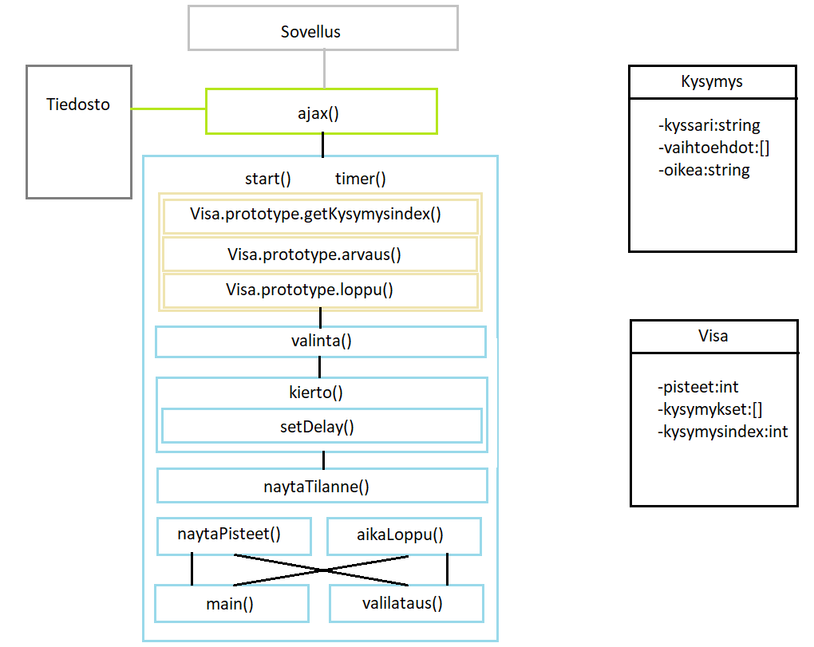
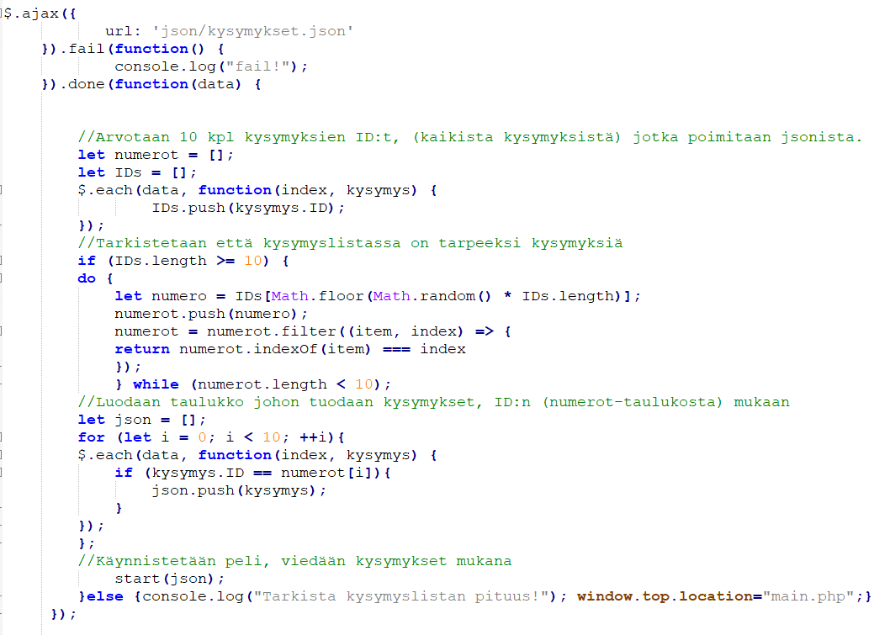
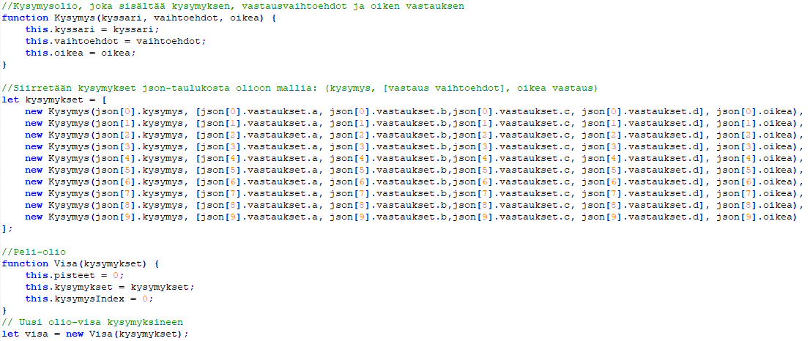
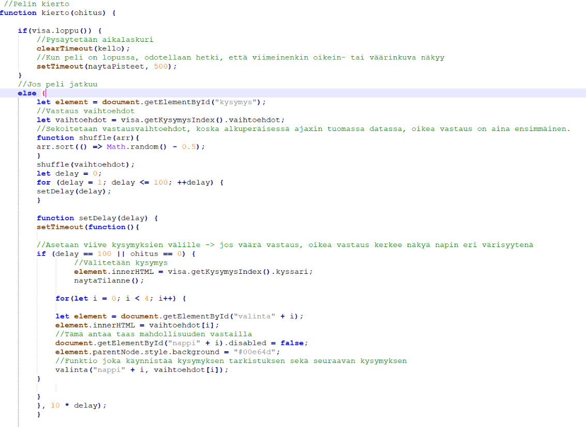
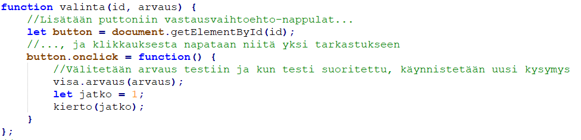
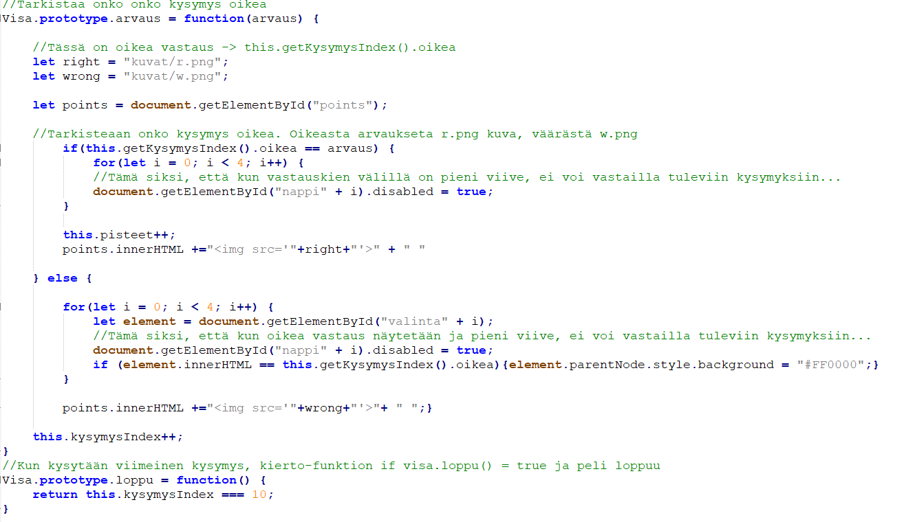
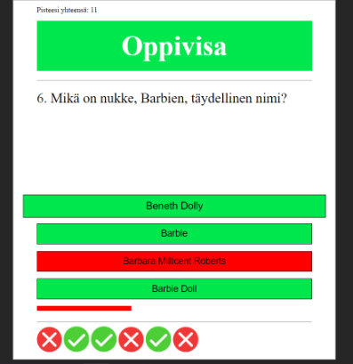
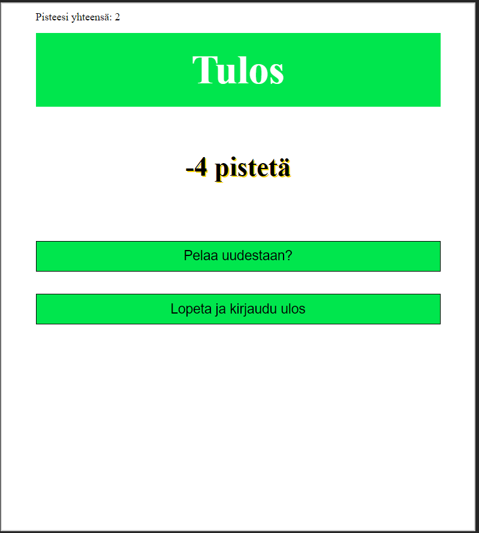

Kimmo Korhonen N3031
Harjoitustyö
13.11.2020
Harjoitustyö Tunnus: testi Salasana: salaWeb-ohjelmoinnin (TTMS0500) opintojakson harjoitustyönä oli määrä tehdä opintojakson aihealueeseen liittyvä dynaaminen verkkosivusto, jonka aihe oli vapaasti valittavana. Harjoitustyön tavoitteena oli oppia soveltamaan ja osoittamaan aihealueen hallintaa laajemmin ja syvemmin, kuin jakson tehtävissä vaadittiin. Harjoitustyön aihe mallintaa AJAX-tekniikkaa hyödyntävää verkkosivua. Harjoitustyön tavoitteena oli luoda pintaraapaisua syvempi logiikka, joka kuitenkin pysyisi aiheeltaan - itse sivunkäyttäjän, kuin ohjelmoijankin kannalta helposti lähestyttävänä.
Harjoitustyön verkkosivu, aiheeltaan Oppivisa, on toteutettu AJAX-tekniikkaa hyödyntämällä, ja sivun rakenne, sisältö, ulkoasu ja asettelu on totetutettu käyttämällä HTML:ää ja CSS:ää, sekä sivun dynaamillisuus on toteutettu käyttämällä Javascript-ohjelmointikieltä. Verkkosivu on ohjelmoitu yhdessä Web-palvelinohjelmointi-jakson harjoitustyön kanssa, joten PHP-kieltä on käytetty toteutuksessa myös. Oppivisan itse logiikan toteutuksessa käytetään olioita. Alla hahmotelma kaaviokuvana
Kysymykset on asetettu valmiiksi JSON-tiedostoon, josta AJAX-tekniikkaa käyttäen, arpomalla, kysymyksien ID-numeron perusteella, ne asettetaan taulukkoon ja lopulta olioksi. Kysymyksillä on kolme ominaisuutta: Kysymys, vastaus vaihtoehdot ja oikea vastaus. Kysymykset asetetaan visa-olioon. (itse tietovisan), jossa on ominaisuudet pisteet ja kysymysindexi, eli laskuri, joka määrää monesko kysymys on vuorossa. Visassa on lisäksi aikalaskuri, joka ohjelmoitu 40 sekunttiin, kunnes peli loppuu automaattisesti. Pelaaja kirjautuu valmiiksi rekisteröidyllä tunnuksella ja salasanalla peliin. Näin siksi, koska peli on tarkoitettu opiskelijoille, ja opetteja (ylläpitäjä) tekee tunnukset oppilaille. Tästä sitten lisää Web-palvelinohjelmoinnin harjoitustyössä. Alla kuva AJAXin käytöstä, kysymyksien arpomisesta ja olioista:
 Kierto-funktio pyörittää kilpailua, asettaa kysymyksiä ja välittää vastauksia tarkistuttavaksi, kunnes kaikki kysymykset visa-olion indexista on kysytty, ja peli loppuu. Jos peli ei ole loppunut, ladataan oliosta vastausvaihtoehdot muuttujaan ja sekoitetaan niiden paikat, jotta kysymyksien vastausvaihtoehdot eivät olisi aina samassa järjestyksessä. Kysymyksien esillelaitossa käytetään delay-viivettä, jolloin väärän vastauksen tullessa, pelaaja kerkee huomioimaan oikean vastauksen, joka näytetään erivärisenä vastausvaihtoehdoista. Alla kuva kierrosta ja vastauksen valinta- ja arvaus-funtioista
 Visan arvaus-funktio tarkistaa onko pelaajan valitsema vastausvaihtoehto oikea vai väärä. Oikean vastauksen myötä funktio asettaa pelaajan nähtäville kuvan oikeasta vastauksesta, ja väärän vastausken myötä väärä-kuvan. Kysymyksiä kysytään kymmenen kappaletta, ja vastausvaihtoehtoja on neljä. Oikeasta vastauksesta saa 2 pistettä, väärästä vastauksesta vähennetään 1 piste. Pelin tilannenäkymä (jossa pelaajalle näytetään, onko vastaukset menneet oikein) näkyy alhaalla ja väärän vastauksen tullessa, oikea vastaus näkyy punaisena. Alla kuva arvaus-funktiosta ja pelitilanteesta, jossa näkyy menneiden vastauksien arvaukset alhaalla, ja juuri väärin vastatun kysymyksen oikea vastaus punaisena. Punainen x-akselin mukainen viiva, näyttää peliajan kulumisen. Ylhäällä näkyvät pelaajan kokonaispistemäärä, jonka periaate on enemmän Web-palvelinohjelmoinnin harjoitustyön osuutta.
 Kun peli loppuu, näytetään pelaajalle pisteet ja mahdollisuuden kirjautua ulos.
Mitään suuria ongelmia ei itse pelin logiikan kanssa ei vastaan tullut. Yksittäinen nostettava ongelma oli, kuinka ja missä vaiheessa ohjelma ymmärtää että peli on loppu. Siihen tuli kokeiltua ihan toimivia, mutta monimutkaisia rakenteita. Vastaus löytyi lopulta hakukoneelta. Ongelmat liittyivät lähinnä pieniin yksittäisiin ongelmiin, kuten, kuinka arvotaan kysymykset AJAX-tekniikkaa käyttäessä ja niin, että kysymyksien vastaukset eivät olisi joka kerta samassa järjestyksessä? Kuinka asetaan viive kysymyksien välillä, vaihdetaan oikean vastauksen väriä ja kuinka estetään ettei pelaaja voi näpytellä viiveen aikana kysymyksiä eteenpäin. Ratkaisut näihin olivat kuitenkin ihan ohjelmoinnin perusteita, eikä päänahka ärtynyt kovinkaan kynsillä raapimisesta.
Verkkosivusta ja itse visasta tuli sellainen kuin alun perin olin suunnitellutkin. Aikaa meni noin 35h. Jälkikäteen ajateltuna, aika yksinkertainen, mutta ohjelmoinnin tiimellyksessä ei aina siltä tuntunut, ja palvelinohjelmoinnin ymppääminen tähän samaan ohjelmaan aiheuttu enemmän kuin harmaita hiuksia ja vei lopulta aikaa viimeistellä tätä. Mm. funktioiden nimet ja muutenkin selkeys jäi vaiheeseen. Ja olisihan tuo ollut kiva myös tyylitellä mobiililaitteille sopivammaksi. Hakukoneen ja jakson materiaalien kanssa tuli aikaa vietettyä kiitettävästi. Kaikenkaikkiaan todella opettavainen harjoitustyö. En tiedä mitä muuta olisin voinut tuohon tuoda lisää, tämä pikku Oppivisa toimii hyvin tällaisenaan. Ideahan tässä oli, että sivu on tarkoitettu oppilaille ja ylläpidon puolella (palvelinohjelmoinnin), opettaja voi lisäillä, rekisteröidä pelaajia ja lisäillä kysymyksiä jne. Ehkä ulkoasun parannukseen olisin voinut käyttää enempi aikaa, mutta kauneushan on katsojan silmässä... Pisteytys on vähän hankala, kun palvelinohjelmointi kuuluu niin isona osana tätä kokonaisuutta, mutta ei saa olla vaatimaton: Arvosanaksi antaisin 4.5/5.